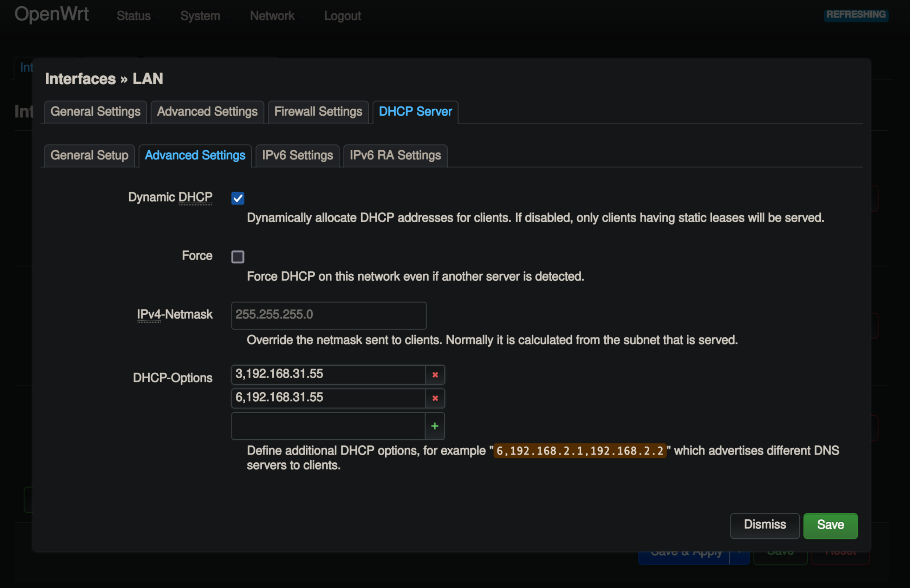

“一个黑暗的形体，像一个匍匐的人一般大小，但是长着长长的蜘蛛一样的肢体……黑暗中的形体以惊人的速度向他奔来。当它靠近时，他看到那蹲坐着的乌黑身体上有一张脸，在身体底部那些多节的腿之间。那张面孔用一种怀疑和质问的可憎表情凝视着他；而当这个大胆的猎人与那小而狡诈的，四周全是毛发的眼睛对视时，恐惧流遍了他的每一根血管。”
自从我在自己的红米ac2100上跑shellclash之后, 路由器的表现就开始变得不再稳定, 且不说shellclash 的些许适配上的小问题, clash自身所消耗的内存, 也让我这台只有128M内存的路由器不堪重负.
一开始, 我想换个性能更好的路由器比如AX6000这样的路由器, 一看价格也不是特别贵, 就想着入手, 但是向来崇尚极简主义的自己不免会想到怎么处理手头现有的路由器, 难道要扔掉吗? 我一边这样想着, 一边查看AX6000的参数, 希望能看到足够吸引我购买的数值, 但是512M的内存容量属实让我笑出了声: 这算什么, 我手头的树莓派3b+都能吊打它.
想到这里, 心念一动, 对啊, 如果可以以某种方式让树莓派和路由器协作起来, 让clash跑在树莓派上, 既能解决我的问题, 又可以让吃灰已久的树莓派再就业, 岂不美哉? 如此想着, 就找到了 https://zhuanlan.zhihu.com/p/270351562?utm_id=0 ,
第一步 刷入openwrt
当然, 要达到这样的效果, 第一步是让我的路由器刷入openwrt, 幸运的是, openwrt官方支持红米ac2100并且在官网给出了安装教程, 链接为https://openwrt.org/toh/xiaomi/xiaomi_redmi_router_ac2100, 然后可以按照个人喜好调整网段, 由于我的局域网中有一个k8s集群, 我不希望集群节点的ip变化, 因此我将默认的192.168.1.0/24 设置成了 192.168.31.0/24
第二步 树莓派设置
静态ip
编辑 /etc/dhcpcd.conf, 添加静态ip
interface eth0
static ip_address=192.168.31.55/24
static routers=192.168.31.1
static domain_name_servers=192.168.31.1 8.8.8.8 fd51:42f8:caae:d92e::1
设置iptables转发规则
将所有流量转发给clash
iptables -t nat -N CLASH
iptables -t nat -A CLASH -d 10.0.0.0/8 -j RETURN
iptables -t nat -A CLASH -d 127.0.0.0/8 -j RETURN
iptables -t nat -A CLASH -d 169.254.0.0/16 -j RETURN
iptables -t nat -A CLASH -d 172.16.0.0/12 -j RETURN
iptables -t nat -A CLASH -d 192.168.0.0/16 -j RETURN
iptables -t nat -A CLASH -d 224.0.0.0/4 -j RETURN
iptables -t nat -A CLASH -d 240.0.0.0/4 -j RETURN
iptables -t nat -A CLASH -p tcp -j REDIRECT --to-ports 7892
iptables -t nat -A PREROUTING -p tcp -j CLASH
clash安装配置
示例:
port: 7890
socks-port: 7891
redir-port: 7892
allow-lan: true
mode: Rule
log-level: debug
external-controller: :9090
proxies:
......
rules:
......
dns:
use-hosts: true
listen: 0.0.0.0:53
#listen: 127.0.0.1:7874
enable: true
ipv6: false
enhanced-mode: fake-ip
nameserver:
- 114.114.114.114
- 119.29.29.29
fallback:
- https://cloudflare-dns.com/dns-query
- https://dns.google/dns-query
- https://1.1.1.1/dns-query
- tls://8.8.8.8:853
fallback-filter:
geoip: true
ipcidr:
- 0.0.0.0/8
- 10.0.0.0/8
- 100.64.0.0/10
- 127.0.0.0/8
- 169.254.0.0/16
- 172.16.0.0/12
- 192.0.0.0/24
- 192.0.2.0/24
- 192.88.99.0/24
- 192.168.0.0/16
- 198.18.0.0/15
- 198.51.100.0/24
- 203.0.113.0/24
- 224.0.0.0/4
- 240.0.0.0/4
- 255.255.255.255/32
下载3b+对应架构的clash , 也就是armv7, 启动一下, 到这里我们还不能让局域网设备走树莓派的clash
第三步 设置路由器的网关和dns
如图, 在lan中添加DHCP选项, 将路由器的dns和网关设置为树莓派
3,<树莓派ip>
6,<树莓派ip>
我的设置
3,192.168.31.55
6,192.168.31.55

保存, 加载, 重启路由器(好像也不用重启), 你会发现你局域网下的流量会走树莓派的clash了!
第四步 收尾工作
树莓派开机启动服务
vi /etc/systemd/system/clash.service
[Unit]
Description=Clash Daemon
[Service]
ExecStart=/root/clash -d /root/.config/clash
[Install]
WantedBy=multi-user.target
iptables常驻化
为了不让iptables规则在重启后丢失, 需要使用开机自启
apt-get install iptables-persistent
iptables-save -f /etc/iptables/rules.v4
systemctl enable netfilter-persistent
结束!